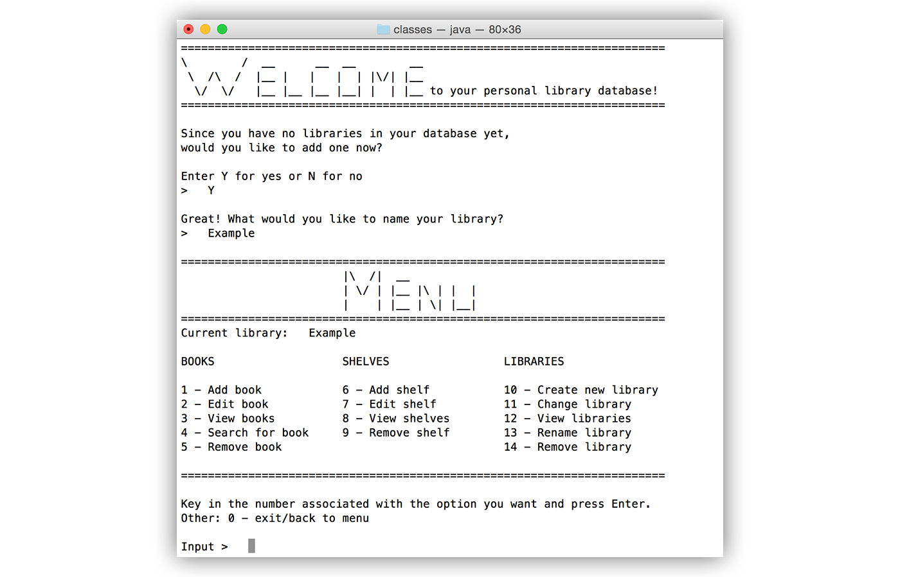

medical program
The most significant project I have worked on for my coursework was a medical program designed to be used
by doctors in a small clinic in order to keep track of patient information and their visits, as well as
to create lab orders and prescriptions. This was a group project for the class Graphical User Interface
Programming Using Java and was more concerned with user-friendliness than real-life usability.
With that in mind, it was a great project for practicing my team programming skills and learning new,
unrelated technologies along the way.

specs
- MySQL Server used to create database that is updated and queried as the program is
used, with the help of Java Database Connectivity (JDBC).
- Amazon AWS S3 used to store database in cloud for the purpose of sharing data with
any computer that runs the program. Also used to store lab result image files.
- Java Swing was used for all GUI components.
- Github was used for each member to efficiently share and push code.
- Maven was used to build and maintain the project.
library database
Another project I put a lot of work into was a Java command-line program with its own menu
and interface that allowed users to store information about books they own and perform functions
such as searching. This was for my Computer Science Using Java II course.
What made this project challenging was the fact that no external database was
used to store the data. With more time, I would have liked to add the feature to create "bookshelves"
which users can use to categorize their books and search through accordingly.

specs
- Java Collections Framework used to store and maintain user-generated data.
- Serialization used to store data structures in program state.
- Composition used to enforce hierarchy of data: User > Libraries > Shelves > Books
rocket software
Currently, the project I am assigned to work on during my internship is concerned with
creating a framework for an internal unified licensing server for Rocket's products in
order to ease the process of generating license keys. Below is a list of the
languages/technologies I am actively using or have been exposed to so far.
specs
- Java, HTML, CSS, JavaScript, jQuery, PHP, MySQL Server, Linux (Red Hat), C#